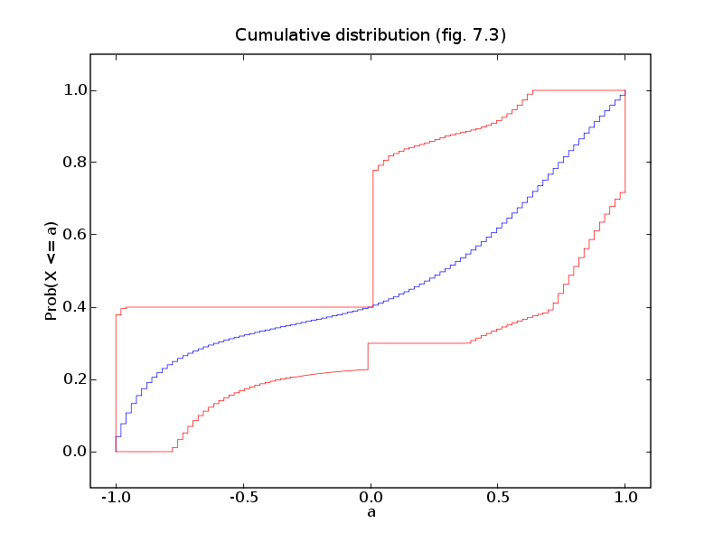
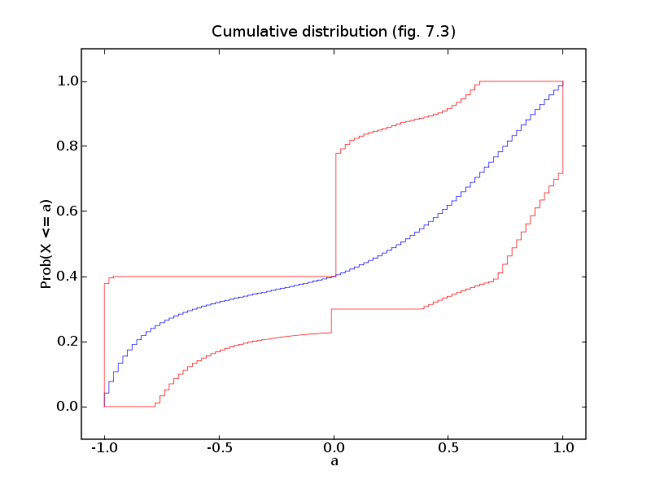

# Figures 7.2 and 7.3, pages 363 and 364.
# Maximum entropy distribution.
from cvxopt import solvers, blas, matrix, spmatrix, spdiag, log, div
solvers.options['show_progress'] = False
# minimize p'*log p
# subject to -0.1 <= a'*p <= 0.1
# 0.5 <= (a**2)'*p <= 0.6
# -0.3 <= (3*a**3 - 2*a)'*p <= -0.2
# 0.3 <= sum_{k:ak < 0} pk <= 0.4
# sum(p) = 1
#
# a in R^100 is made of 100 equidistant points in [-1,1].
# The variable is p (100).
n = 100
a = -1.0 + (2.0/(n-1)) * matrix(list(range(n)), (1,n))
I = [k for k in range(n) if a[k] < 0]
G = matrix([-a, a, -a**2, a**2, -(3 * a**3 - 2*a), (3 * a**3 - 2*a),
matrix(0.0, (2,n))])
G[6,I] = -1.0
G[7,I] = 1.0
h = matrix([0.1, 0.1, -0.5, 0.6, 0.3, -0.2, -0.3, 0.4 ])
A, b = matrix(1.0, (1,n)), matrix(1.0)
# minimize x'*log x
# subject to G*x <= h
# A*x = b
#
# variable x (n).
def F(x=None, z=None):
if x is None: return 0, matrix(1.0, (n,1))
if min(x) <= 0: return None
f = x.T*log(x)
grad = 1.0 + log(x)
if z is None: return f, grad.T
H = spdiag(z[0] * x**-1)
return f, grad.T, H
sol = solvers.cp(F, G, h, A=A, b=b)
p = sol['x']
# Upper/lower bounds on cumulative distribution.
#
# minimize/maximize ck'*p = sum_{i<=alphak} pi
# subject to G*x <= h
# A*x = b
# x >= 0
#
# Solve via dual:
#
# maximize -h'*z - b'*w
# subject to +/- c + G'*z + A'*w >= 0
# z >= 0
#
# with variables z (8), w (1).
cc = matrix(0.0, (9,1))
cc[:8], cc[8] = h, b
GG = spmatrix([], [], [], (n+8, 9))
GG[:n,:8] = -G.T
GG[:n,8] = -A.T
GG[n::n+9] = -1.0
hh = matrix(0.0, (n+8,n))
hh[:n,:] = matrix([i>=j for i in range(n) for j in range(n)],
(n,n), 'd') # upper triangular matrix of ones
l = [-blas.dot(cc, solvers.lp(cc, GG, hh[:,k])['x']) for k in range(n)]
u = [blas.dot(cc, solvers.lp(cc, GG, -hh[:,k])['x']) for k in range(n)]
def f(x,y): return x+2*[y]
def stepl(x): return reduce(f, x[1:], [x[0]])
def stepr(x): return reduce(f, x[:-1], []) + [x[-1]]
try: import pylab
except ImportError: pass
else:
pylab.figure(1, facecolor='w')
pylab.plot(stepl(a), stepr(p), '-')
pylab.title('Maximum entropy distribution (fig. 7.2)')
pylab.xlabel('a')
pylab.ylabel('p = Prob(X = a)')
pylab.figure(2, facecolor='w')
pylab.plot([-1.0] + stepl(a), [0.0] + stepr(hh[:n,:].T*p), '-',
[-1.0] + stepl(a), [0.0] + stepr(l), 'r-',
[-1.0] + stepl(a), [0.0] + stepr(u), 'r-')
pylab.title('Cumulative distribution (fig. 7.3)')
pylab.xlabel('a')
pylab.ylabel('Prob(X <= a)')
pylab.axis([-1.1, 1.1, -0.1, 1.1])
pylab.show()
 
